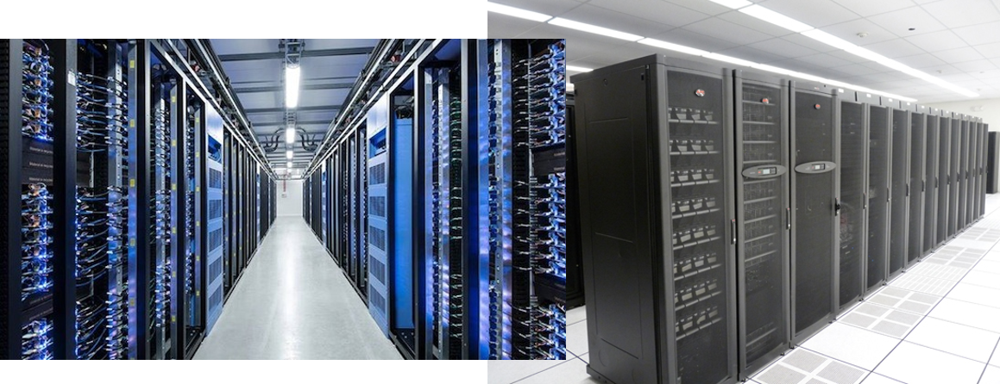
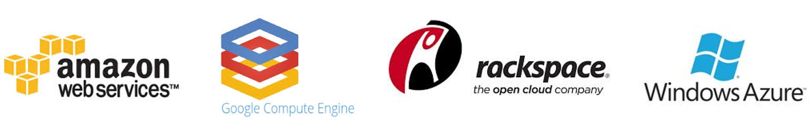

class: center, middle # IEMS 5780 / IERG 4080<br/>Building and Deploying Scalable<br/>Machine Learning Services ### Lecture 13 - Deploying Machine Learning Applications #### Albert Au Yeung<br/>4th December, 2018 --- class: center, middle # Cloud Computing --- # Cloud Computing * What is **cloud computing**? <br/><br/> <center> </center> --- # Servers * What people do when they need to run a network application? <center> <img src="img/l13-webserver.jpg" width="40%"/> <br/><br/> THe first Web server (a NeXT computer) </center> --- # Data Centres * What people do when they need to run a network application? <center>  <br/><br/> Data centres </center> --- class: split # Data Centre Services .column-left[ <center> </center> ] .column-right[ Figure from "Cloud Computing - A Primer - The Internet Protocol Journal", The Internet Protocol Journal, Volume 12, No.3 ] --- # Data Centre Services <center> <br/><br/> Figure from "Cloud Computing - A Primer - The Internet Protocol Journal", The Internet Protocol Journal, Volume 12, No.3 </center> --- # Cloud Computing * **NIST** (National Institute of Standards and Technology) - “Cloud computing is a model for enabling **ubiquitous**, **convenient**, **on-demand** network access to a shared pool of configurable **computing resources** (e.g., networks, servers, storage, applications, and services) that can be rapidly provisioned and released with minimal management effort or service provider interaction.” * Ref: [http://www.nist.gov/itl/cloud/](http://www.nist.gov/itl/cloud/) --- class: split # Cloud Computing .column-left[ ### **John McCarthy**<br/>(who invented the term "Artificial Intelligence") * The first to suggest publicly (in 1961 in a speech given to celebrate MIT's centennial) that computer time-sharing technology might result in a future in which computing power and even specific applications could be sold through the utility business model (like water or electricity). ] .column-right[ <center> </center> ] --- # Cloud Computing <center> <img src="img/l13-cloudmodels.png" width="85%"/> </center> --- # Cloud Computing Characteristics <center> </center> --- # Infrastructure-as-a-Service (IaaS) * To provision **processing**, **storage**, **networks**, and other fundamental **computing resources** where the consumer is able to deploy and run arbitrary software (e.g. virtual machines) * Consumers do not manage or control the underlying cloud infrastructure but have control over **operating systems**, **storage**, and **deployed application**s; and possibly limited control of select **networking components** <center>  </center> --- # Platform-as-a-Service (PaaS) * To deploy onto the cloud infrastructure **consumer-created or acquired applications** created using programming languages, libraries, services, and tools supported by the provider. * Consumers have control over the **deployed applications** and possibly **configuration settings** for the application-hosting environment. <center> <img src="img/l13-paasproviders.png" width="90%"/> </center> --- # Software-as-a-Service (SaaS) * To use the provider's **applications** running on a cloud infrastructure, which are accessible from various client devices through either a thin client interface. * Consumer do not manage or control the underlying cloud infrastructure including network, servers, operating systems, storage, or even individual application capabilities <center> </center> --- class: middle, center # Enabling Technologies of Cloud Computing --- # What Makes Cloud Computing Possible? <center> </center> --- # Virtualization Technologies * **Virtualisation** divides the resources of a computer into multiple **isolated** execution environments, by applying one or more concepts or technologies such as hardware and software partitioning, time-sharing, partial or complete machine simulation, emulation, etc. <br/><br/> <center> <img src="img/l13-cloud-system.png" width="70%"/> </center> --- # Hypervisors * **Virtualisation** is enabled by software called **hypervisors** * What does a hypervisor do? - Provide **isolated execution environment** for each VM - Manage **access of physical resources** by each VM * Two types of hypervisors: <br/><br/> <center> <img src="img/l13-hypervisors.png" width="100%"/> </center> --- # Hypervisors * Hypervisors get its name because it is conceptually **one level higher than a supervisory program (part of an OS)**. * **Type 1** hypervisors run directly on bare metal instead of within an operating system environment - provide the best performance, availability, and security of any form of hypervisor. * **Type 2** hypervisors run within an operating system environment running on the host computer - typically referred to as hosted virtualization --- # Cloud Management Systems * A layer above hypervisors * **Manage** a cloud infrastructure, which may include many physical nodes, networking devices, storage devices, etc. <br/><br/> <center> </center> --- # Cloud Management Systems ### Some of the functions of a CMS: * Resource allocation (Determine where to create a VM) * Resource monitoring (Usage of physical resources) * Enforcement of resource, security and configuration policies * User management & billing * VM image management * User interface for on-demand self-service * ... --- class: middle, center # Auto-scaling --- # Cloud & Scalability ### Cloud computing allows you to **add** or **remove** computing resources more quickly and easily * Adding one more application server * Adding new hard disk storage space * Adding extra database servers * ... --- # Auto-scaling * Given that everything is **virtual** in the cloud, all changes to the configurations of the virtual machines, applications, firewalls, etc., can be automated * **Auto-scaling** refers to the idea of automatically adding or removing computing resources in the system **based on the actual usage** in real-time * Auto-scaling can be triggered by **different rules**, for example: - Based on a schedule (E.g. start three more application servers during Christmas) - Base on demand (work load) - Example 1: start one more server if the average CPU utilization rate is over 80% for 10 minutes) - Example 2: stop one server if the average CPU utilization rate is less than 20% for 10 minutes) --- # Case Study * [Netflix](https://medium.com/netflix-techblog) is an online video streaming company and it servers millions of users at different times. * However, the load on the system can be different at different hours and on different days <center> <img src="img/l13-netflix-autoscale.png" width="50%"/> </center> * Imagine if you can predict the load on the application, you can auto-scale in advance - React to changes in demand more quickly - Save the amount of $$$ spent on unused resources * Ref 1: [http://techblog.netflix.com/2012/01/auto-scaling-in-amazon-cloud.html](http://techblog.netflix.com/2012/01/auto-scaling-in-amazon-cloud.html) * Ref 2: [http://techblog.netflix.com/2013/11/scryer-netflixs-predictive-auto-scaling.html ](http://techblog.netflix.com/2013/11/scryer-netflixs-predictive-auto-scaling.html ) --- # Scaling using Cloud Services * Take a look at how auto-scaling can be configured in **Amazon AWS**<br/>Auto Scaling EC2 With Custom Scaling Policy<br/>[https://www.youtube.com/watch?v=5swEiz0i-kE](https://www.youtube.com/watch?v=5swEiz0i-kE) * Another video introducing similar function in **Google Cloud**<br/>Learn how to scale your applications with Google Compute Engine<br/>[https://www.youtube.com/watch?v=TfbEwfYjKl4](https://www.youtube.com/watch?v=TfbEwfYjKl4) --- class: middle, center # Docker --- # Deploying Applications ### Deploy: to put your application into production * How would you develop and deploy your application? - Set up a development environment to develop your app - Set up the production environment, and copy your application to the production machine * **Problem?** - It takes time to set up the production environment --- # Deploying Applications ### Does using **cloud** and **virtual machines** solve the problem? <br/><br/> <center> <img src="img/l13-deploy-cloud.png" width="80%"/> </center> --- # Deploying Applications ### **Limitations** of using Virtual Machines (VMs) * They run on hypervisor, and thus are not particularly efficient in using the resources of the machine * The size of the image is usually very large (at the order of GB) * Requires some time to boot and start up (at the order of minutes) * One physical machine can only support at most tens of VMs --- # Docker * [Docker](https://www.docker.io/) is a technology that provides virtualisation solution and allows a developer to package an application with all of its dependencies into a standardised unit for deployment. * A relatively **lightweight** virtualisation compared to VMs * Applications run inside **containers** and are **isolated** from each other * A container can be started in **seconds** * More efficient use of computing resources on the machine <br/><br/> <center> </center> --- # Docker <center> <img src="img/l13-docker-vs-vm.png" width="80%"/> </center> * See also: [https://docs.docker.com/get-started/#containers-and-virtual-machines](https://docs.docker.com/get-started/#containers-and-virtual-machines) --- class: equal-split # Basic Concepts in Docker .column-left[ * **Image**:<br/>a read-only file containing the application * **Container**:<br/>an instance of an image for executing the application * **Repository**:<br/>where images are stored, like GitHub - Can be private or public - The largest public repository is [Docker Hub](https://hub.docker.com/) ] .column-right[ <center> </center> ] --- # Creating a Docker Image * To create a docker container that runs your application, you need to: - Create a docker image (usually from a **base image**) - This is done by write a **Dockerfile**, which describes how the image is created/built * Let's say we have a very simple Web application written in Flask ```python from flask import Flask app = Flask(__name__) @app.route("/") def index(): return "Hello!" if __name__ == "__main__": app.run(host="localhost", port=5000) ``` --- # Creating a Docker Image * We can create a docker image for this application using the `ubuntu:latest` base image * Our Dockerfile: ```python # Use the python3.6 base image FROM python:3.6 # Set working directory to /app WORKDIR /app # Copy our application file into the image COPY app.py /app # Install our dependency (Flask in this case) RUN pip install Flask # Run app.py when the container is launched CMD ["python", "app.py"] ``` --- # Creating a Docker Image * Building the **image** using the Dockerfile: * (`-t` assigns a **tag** to the image created) ```bash $ sudo docker build -t flask-app:1.0 . ``` * Creating a **container** running the app using the image built above ```bash $ sudo docker run -p 5000:5000 flask-app:1.0 ``` * Note: we **forward** connections on port 5000 of the host machine to the port 5000 of the docker container --- class: center, middle # End of Lecture 13